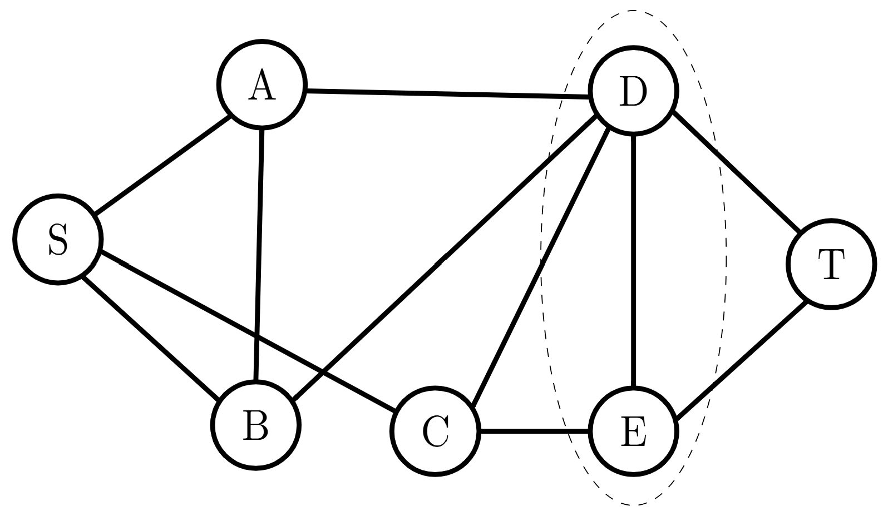
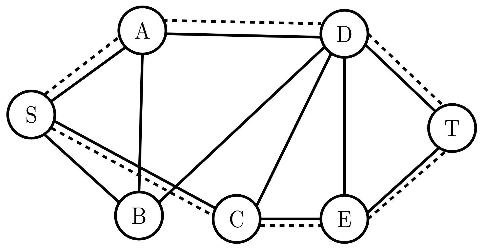
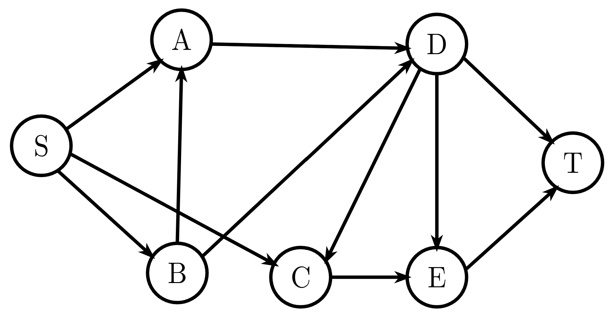
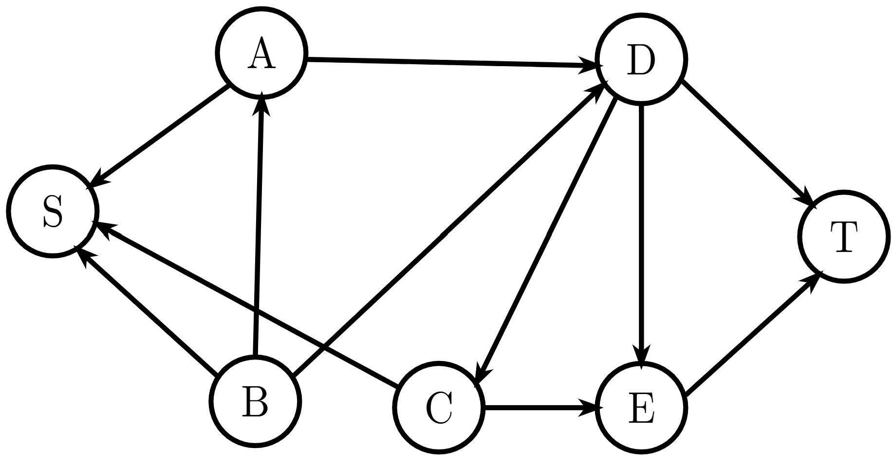
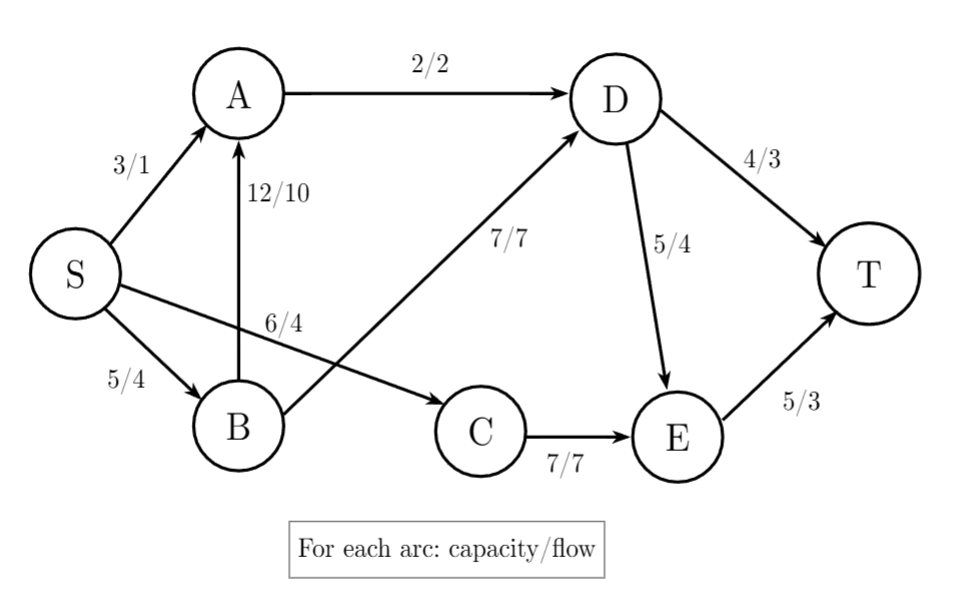
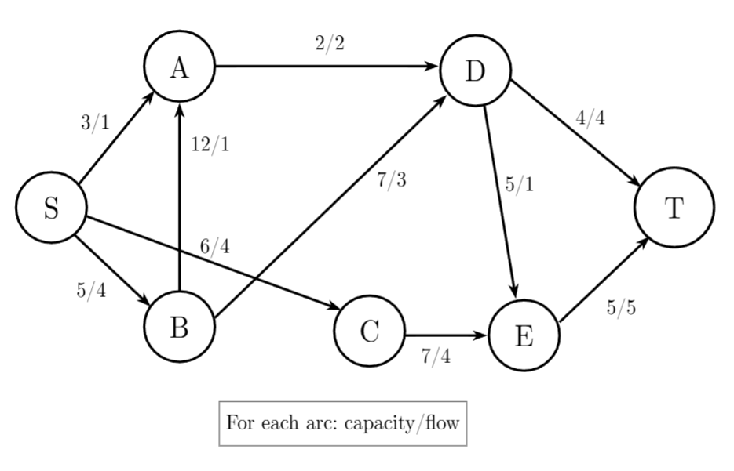
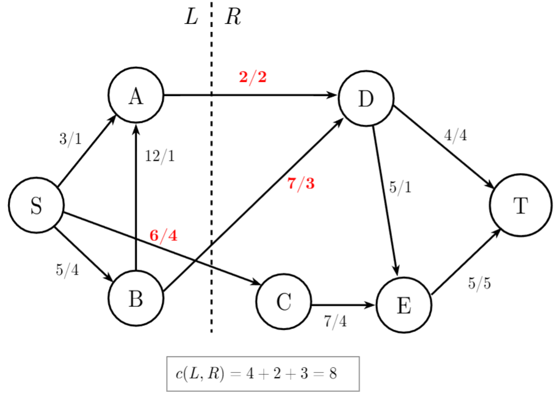

Lecture 21: Network Flows#
Warmup#
Answer
With a fair bit of experimentation, you might find that the minimum is 2. Some examples of vertices you could remove are the vertices that share an edge with \(S\) or the vertices that share an edge with \(T\).
For example, if we remove \(D\) and \(E\) from the graph, \(T\) has no more edges. So, there is definitely not a path from \(S\) to \(T\)!


After we know the answer to this question, we immediately know another fact. That is, the maximum number of internally disjoint \(ST\)-paths is also 2. (Assuming \(\{S,T\}\) doesn’t exist) This is what Menger’s theorem guarantees! An example of some internally disjoint \(ST\) paths are the following:


Menger’s theorem offers a profound connection between two seemingly different problems. In essence, that
Consider taking each edge in the example graph and giving the edge a direction to form an arc:


We now want to find the minimum number of nodes to remove so there is no directed \(ST\)-path.
“Answer”
Note that (luckily) both of the \(ST\)-paths we pointed out in the example above are now directed \(ST\)-paths in the new digraph. You might try adjusting your intuition from before mildly and find the answer is the same.
However, this is such a specific case! Garrett put thought into this example so it just so happens that the two \(ST\)-paths becomes a directed \(ST\)-path. If Garrett formed the following graph, then there would be no way to form a directed \(ST\)-path!


So, clearly Menger’s theorem doesn’t exactly translate to these types of digraphs. We’ll have to do more work to find an analogue of Menger’s for these types of digraphs.
Flow Networks#
The type of digraph we are discussing is what we’ll call a
Notice that all the arcs involving \(S\) point away from \(S\). Likewise, all the arcs involving \(T\) point toward \(T\). \(S\) is what we call a
Definition 48 (Flow Network)
A
There is a source node \(s\in V\) such that \((s,v)\in \mathcal{E}\) are the only arcs containing \(s\) and a sink node \(t\in V\) such that \((v,t)\in \mathcal{E}\) are the only arcs containing \(t\)
For all arcs \((u,v)\in \mathcal{E}\), we associate a flow \(f(u,v)\) and a capacity \(c(u,v)\) such that \(0\leq f(u,v)\leq c(u,v)\)
If an arc \((u,v)\) exists, then \((v,u)\) does not
Taking the example digraph and equipping each arc with flows and capacities, we end up with a flow network:


Notice that each flow is non-negative and no larger than the capacity. If these arcs were water pipes, there is no more water flowing through the pipes than the pipes can handle. Moreover, notice that the arcs with $S$ point away and the arcs with $T$ point toward.
Max-Flow#
Notice in the above example, the amount of flow in to \(A\) is 11 and the amount of flow out is 2. Using the water metaphor, this would make no sense. The amount of flow in should be equal to the amount of flow out. This makes the constraint of what we’ll define as the
Definition 49 (Max-Flow Problem)
Given a flow network such that \(\sum\limits_{u\in V}f(u,v)=\sum\limits_{u\in V}f(v,u)\) for all \(v\in V\), maximize \(\sum\limits_{u\in V}f(s,u)=\sum\limits_{u\in V}f(u,t)\).
In short, the max-flow problem says: “In a flow network where the flow into each node equals the flow out of each node, maximize the amount of flow from the source to the sink”.
To satisfy the constraint that flow in equals flow out for each node, we can adjust our example a little:


You can verify that for each node, this requirement is satisfied. But, you might ask yourself the following:
I encourage you to explore solutions and look up example algorithms.
Min-Cut#
A similar problem we might like to solve involves bottlenecking in networks. Using the water system metaphor, we might ask which set of pipes restrict flow between our source and our sink. This is what the min-cut problem asks. First, some lingo:
Definition 50 (\(st\)-cut)
Let \(s\) and \(t\) be source and sink nodes in a flow network \(\mathcal{G}=(V,\mathcal{E})\). \(st\)-cuts are subsets of vertices \(L\subset V\) and \(R\subset V-S\) such that \(s\in L\) and \(t\in R\). The capacity of an \(st\)-cut \(c(L,R)\) is defined as \(c(L,R)=\sum\limits_{u\in L, v\in R}c(u,v)\).
In short, an \(st\)-cut is a way to separate the source and sink in a flow network and the capacity of that cut is the sum of the arcs that connect nodes in those two pieces. This leads to the following problem.
Definition 51 (Min-Cut Problem)
Given \(s\) and \(t\) source and sink nodes in a flow network \(\mathcal{G}=(V,\mathcal{E})\), find an \(st\)-cut \(L\) and \(R\) such that \(c(L,R)\) is as small as possible.
Taking our example flow network, if we selected the following \(ST\)-cut, we would get a capacity of 8:


I will leave you to find the minimum capacity for an \(ST\)-cut in this network and devise ways to solve the problem in general.
Min-Max Theorem#
Consider again Menger’s theorem:
Theorem 31 (Menger’s Theorem)
Let \(u\) and \(v\) be distinct vertices in \(G\) with no edge between them. Then, the minimum number of vertices in a \(uv\)-separating set is exactly the maximum number of internally disjoint \(uv\)-paths (i.e. \(\psi_G(u,v)=\kappa_G(u,v)\)).
Hopefully, you can see how Menger’s might sound for flow networks. The “maximum number of internally disjoint paths” sounds like a flow problem. The “minimum number of vertices in a separating set” sounds like a cut problem. Indeed, the max-flow and min-cut are the same:
Theorem 32 (Min-Max Theorem)
Let \(\mathcal{G}=(V,\mathcal{E})\) be a flow network with source node \(s\) and sink node \(t\). Then, the maximum flow between \(s\) and \(t\) equals the minimum capacity of an \(st\)-cut.
In short, the maximum flow equals the minimum cut.